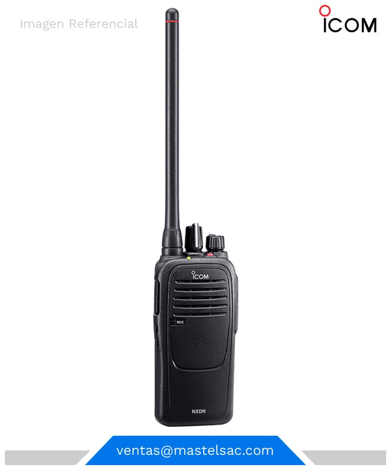
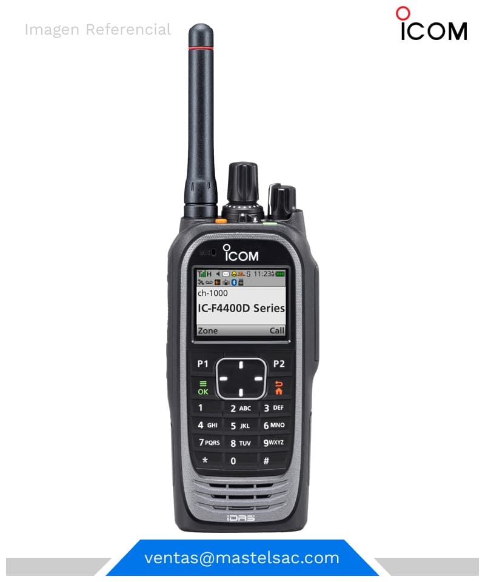
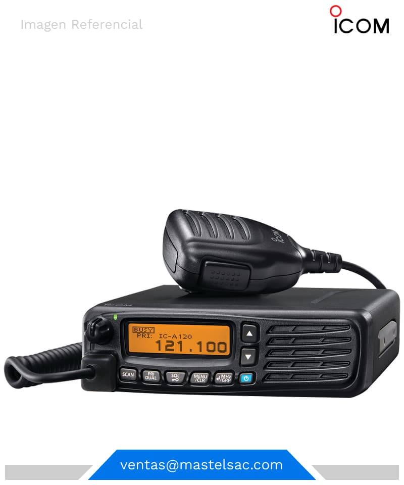
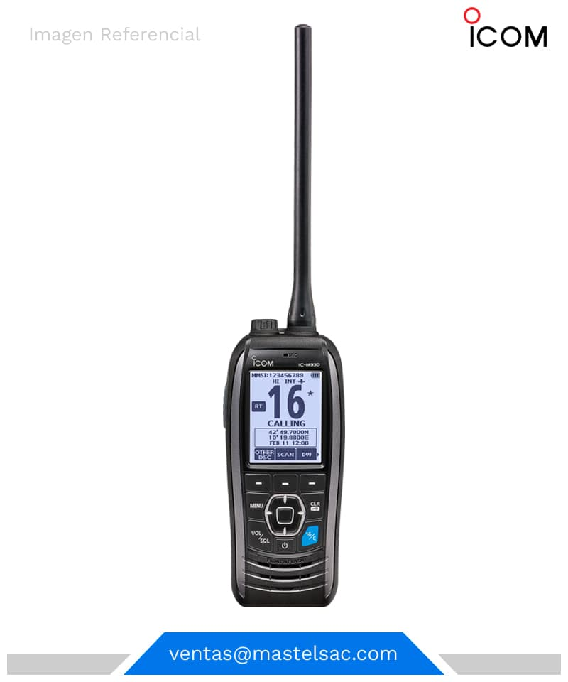

RADIOS DIGITALESRADIO ICOM IC-F5961D MÓVIL DIGITALRADIO ICOM IC-F5400DS MÓVIL DIGITALRADIO ICOM IC-F6123D MÓVIL DIGITALRADIO ICOM IC-F6400DS MÓVIL DIGITALRADIO ICOM IC-F1000D PORTÁTIL DIGITALRADIO ICOM IC-F3000DS PORTÁTIL DIGITALRADIO ICOM IC-F3103D PORTÁTIL DIGITALRADIO ICOM IC-F3161DF PORTÁTIL DIGITALRADIO ICOM IC-F3230DS PORTÁTIL DIGITALRADIO ICOM IC-F3400D PORTÁTIL DIGITAL
RADIOS ANALÓGICOSRADIO ICOM IC-A120 MÓVIL AÉREORADIO ICOM IC-A220 MÓVIL AÉREORADIO ICOM IC-F2300H MÓVIL ANALÓGICOSRADIO ICOM IC-F5013H MÓVIL ANALÓGICOSRADIO ICOM IC-F5023 MÓVIL ANALÓGICOSRADIO ICOM IC-M200 MÓVIL MARINORADIO ICOM IC-M506 MÓVIL MARINORADIO ICOM IC-A14 PORTÁTIL AÉREORADIO ICOM IC-A24 PORTÁTIL AÉREORADIO ICOM IC-F1000 PORTÁTIL ANALÓGICOSRADIO ICOM IC-F3003 PORTÁTIL ANALÓGICOSRADIO ICOM IC-F3013 PORTÁTIL ANALÓGICOSRADIO ICOM IC-V80 PORTÁTIL ANALÓGICOSRADIO ICOM IC-M25 PORTÁTIL MARINOSRADIO ICOM IC-M93D PORTÁTIL MARINOSRADIO ICOM IC-78 BANDA LATERALRADIO ICOM IC-7100 BANDA LATERALRADIO ICOM IC-F8101 BANDA LATERALRADIO ICOM IC-M700PRO BANDA LATERAL
 Av. Ral. Trinidad Moran N° 274 Lima 14 - Perú
Av. Ral. Trinidad Moran N° 274 Lima 14 - Perú 999-958-692
999-958-692 ventas@mastelsac.com
ventas@mastelsac.com Lun-Vier: 09:00 am a 18:00 pm / Sab: 09:00 am a 13:00 pm
Lun-Vier: 09:00 am a 18:00 pm / Sab: 09:00 am a 13:00 pm